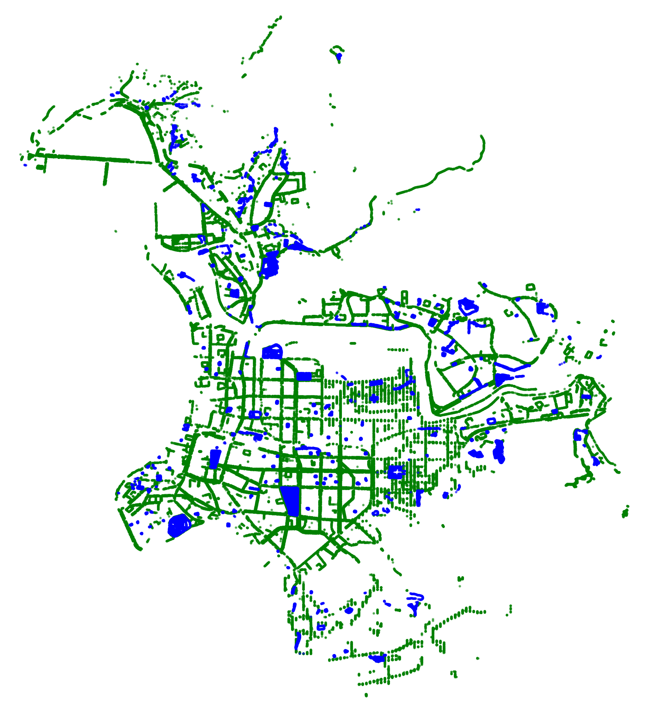

- 每天通勤、散步的過程中，你是否曾留意過身邊的樹？它們靜靜佇立街角、圍繞公園，不只是城市的裝飾，更是都市對抗氣候變遷的重要盟友。
- 目前，臺北市全區約有 14 萬棵樹木。這些樹根據不同的樹種、樹齡與體型，每年可為都市碳排吸收不少的二氧化碳（CO₂）。
- 其中，行道樹占了 95,748 棵，共分屬 286 種樹種；而分布在公園內的綠樹則有 47,834 棵，涵蓋 394 種多樣樹種，這些樹種多樣性為城市構成豐富而多樣的「都市森林」。
- 這些碳吸存效益並非憑空推估，我們可以根據農業部提供的數據──包含臺灣常見 24 種造林樹種的絕乾比重、碳含量比例與轉換係數，利用公式：立木材積＝(胸高直徑)2×0.79×樹高×形數來進行計算。
- 本平台利用臺北市政府工務局公園路燈工程管理處內的臺北市行道樹路燈資訊網上的樹木資料，進行視覺化整理，以呈現臺北市內樹木的種類分布及碳匯能力狀態。
